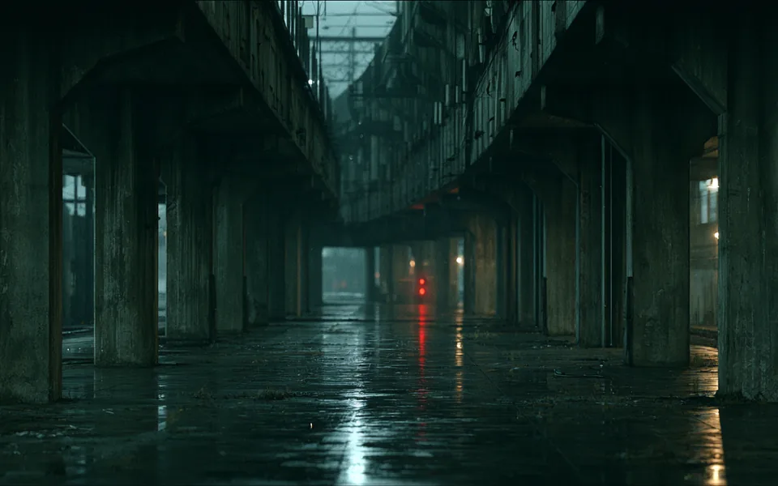
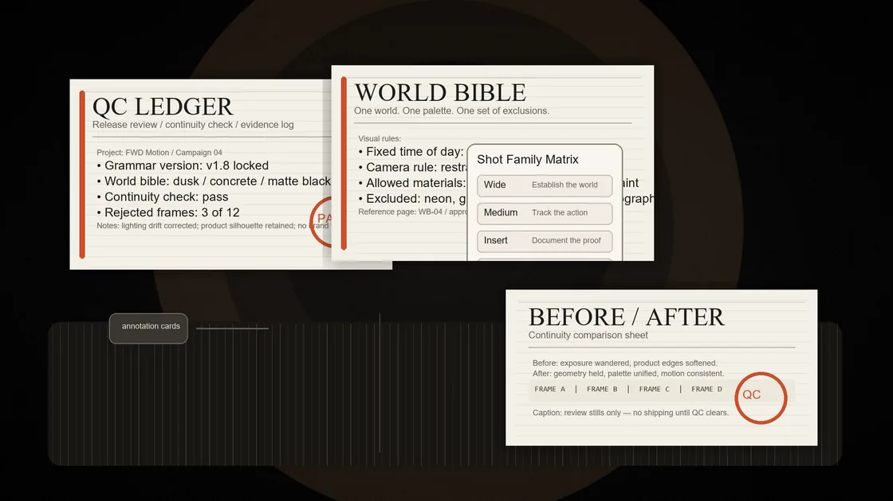
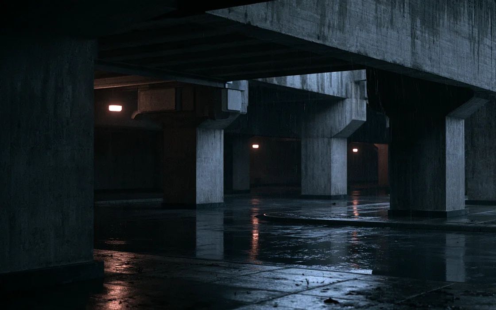
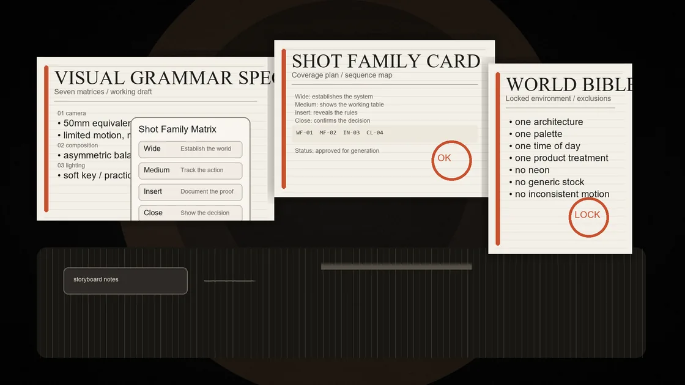

Lens behavior, distance, movement, framing, and prohibited coverage.
Build the grammar.
Then generate the film.
The model renders. The grammar directs.
Selected studies / proof firstSelected studies
Proof before process.
Three self-initiated studies. Different briefs, different product worlds, one directing system. These are FWD Motion R&D studies—not client campaigns.
FWD MOTION STUDY

One world, written down.
- Brief
- Atmospheric campaign world for a premium nocturnal launch.
- Grammar
- 35mm · locked horizon · blue-grey / sodium · weathered concrete.
- Output
- World lock · second-shot coverage · drift study.
SPEC PRODUCTION
Product identity without brand borrowing.
- Brief
- Engineered audio product launch study.
- Grammar
- 50mm · graphite · controlled warm reflection · negative space.
- Output
- Product treatment · locked hero frame · coverage rules.
SPEC PRODUCTION
Material behavior as a directing rule.
- Brief
- Beauty and material-response study.
- Grammar
- 85mm · raking source · graphite / burgundy · micro-texture.
- Output
- Light grammar · material rules · hero-frame study.
SELF-INITIATED R&D · NO CLIENT RELATIONSHIP IMPLIED
Next: why continuity breaks without a written grammar ↓
The problem
A beautiful frame is not a visual system.
Current models can produce an excellent image. The difficult part is making the next image belong to the same film.
Without a written grammar, camera logic wanders, palettes shift, environment rules mutate, product treatment changes, and every shot quietly starts from zero.

Drift Every generation re-interprets the brand.
Rework Every clip has to be directed again.
Fragility The look survives only as long as the prompt history does.
Deconstruct
References become rules, in writing.
Camera, composition, lighting, colour, environment, rhythm, and product treatment are extracted before production begins.
Direction, contrast, source character, time-of-day behavior, and exceptions.
Palette hierarchy, saturation ceiling, material response, and temperature logic.
Environment rules, recurring motifs, negative space, scale, and texture.
SPEC STUDY / NIGHT TRANSIT
One campaign world. Four failure modes.
The peak
Continuity Lock.
The campaign begins with drift. Scroll through the constraints and watch camera, palette, light, and world resolve into one approved visual system.
Coverage obeys the shot-family registry.
Colour returns to the approved hierarchy.
Source direction and contrast stop wandering.
The frame finally belongs to the same film.
DRIFT
GRAMMAR ACTIVE
Locked output
Same world. Different coverage.
Once the grammar is locked, the next shot does not start from zero. Camera position changes; palette, material response, weather, light direction, and world rules persist.

What survives the model
The system is the deliverable.
Brief
Grammar
Reference lock
Generation
Continuity QC
Edit / composite
Grade / sound
The written rulebook for what the campaign always does and never does.
The persistent reality every shot belongs to.
Named coverage types so production is planned rather than improvised.
Approved stills for every planned shot before motion begins.
Passes, conditionals, rejects, and the reasons behind each decision.
Finished outputs that belong to the same film.
ENTRY PRODUCT / 5–7 WORKING DAYS
Campaign Grammar Sprint.
Define the system before committing to a full production. The Sprint turns references and a campaign brief into an inspectable directing package.
Start a Grammar Sprint →- 01Creative premise
- 02Camera grammar
- 03Light grammar
- 04Palette system
- 05Environment grammar
- 06Product treatment rules
- 07Rhythm rules
- 08Locked reference frames
- 09Continuity + production plan
Track source material entering visual development.
Record which generated frames survive into production.
Lock direction before expensive volume generation begins.
Keep approved source, edit, grade, and master lineage explicit.
Production evidence
The artifacts are the proof.
No proof theatre. The working documents show how the world was defined, what passed, and what was rejected.

FWD / MOTION
Cinematic systems by Deploy FWDBring one campaign.
Bring one campaign, one product, or one reference set. Start with a 5–7 day Grammar Sprint, or use the same system as the front end of a full production.
Start a Grammar Sprint → Discuss a production ↗